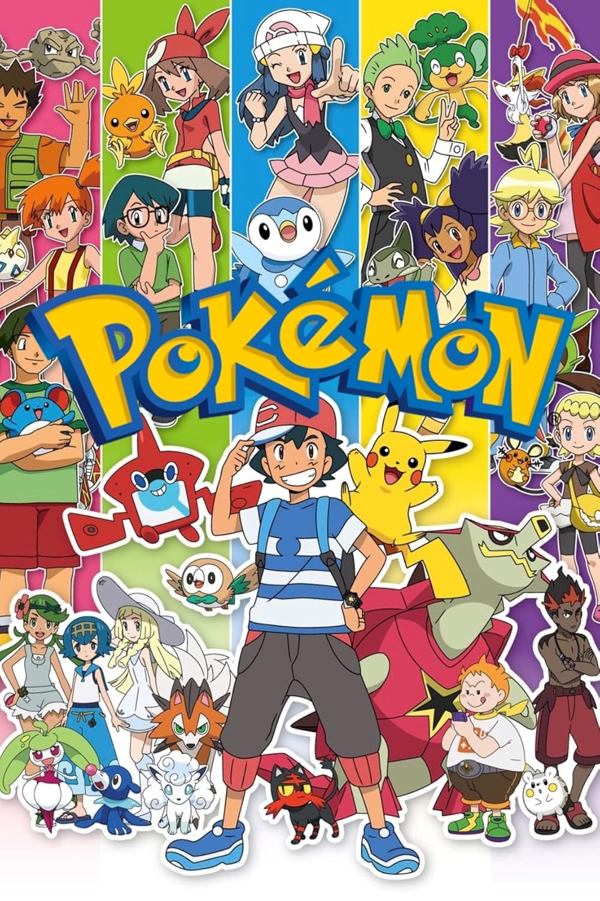

11.30.15_f8aad35c-fotor-bg-remover-2025080722435.png)
 21.12.37_3fee6671-fotor-bg-remover-20250807224216.png)

Satoshi Tajiri
Sumário:
Pokémon é uma franquia de mídia multimídia criada por Satoshi Tajiri em 1995, centrada em criaturas fictícias chamadas "Pokémon" que os humanos capturam e treinam para batalhar. A franquia inclui jogos eletrônicos, anime, mangás, cartas colecionáveis e outros produtos.
Lista de episodios
Liga Índigo
- 1 Pokémon Eu Escolho Você!
- 2 Emergência Pokémon!
- 3 Ash Pega um Pokémon!
- 4 O Desafio do Samurai!
- 5 Exibição na Cidade de Pewter!
- 6 Clefairy e a Pedra da Lua!
- 7 As Flores Aquáticas da Cidade de Cerulean!
- 8 O Caminho Para a Liga Pokémon!
- 9 A Escola dos Golpes Duros!
- 10 Bulbasaur e a Vila Escondida!
- 11 Charmander, o Pokémon Perdido!
- 12 Aí Vem o Esquadrão Squirtle!
- 13 Mistério no Farol!
- 14 A Exibição do Choque Elétrico!
- 15 Batalha a Bordo do St. Anne!
- 16 O Naufrágio Pokémon!
- 17 A Ilha dos Pokémon Gigantes!
- 18 Férias em Acapulco! (Banido)
- 19 Tentacool e Tentacruel!
- 20 O Fantasma do Pico da Donzela!
- 21 Adeus, Butterfree!
- 22 Abra e o Show de Paranormais!
- 23 A Torre do Terror!
- 24 Haunter VS Kadabra!
- 25 Primeape Endoidece!
- 26 Perfume de Pokémon!
- 27 Soneca Hipnótica!
- 28 Na Moda dos Pokémon!
- 29 O Pokémon Lutador!
- 30 Faíscas Voam Pelo Magnemite!
- 31 Em Busca dos Diglett!
- 32 Os Poderes do Poké-Ninja!
- 33 A Poké-Corrida!
- 34 O Filho de Kangaskhan!
- 35 A Lenda de Dratini!
- 36 A Gangue das Bicicletas!
- 37 A Mansão Misteriosa do Ditto!
- 38 O Soldado Elétrico, Porygon!
- 39 Feriado à La Jinx!
- 40 Perdidos na Neve!
- 41 O Adeus de Pikachu!
- 42 Irmãos da Pesada!
- 43 Acorde, Snorlax!
- 44 Batalha na Cidade Sombria!
- 45 A Marcha dos Exeggutors!
- 46 O Problema com Paras!
- 47 A Canção de Jigglypuff!
- 48 Ataque dos Pokémon Pré-Históricos!
- 49 Princesa Contra Princesa!
- 50 Uma Operação Chansey!
- 51 Sagrado Matrimônio!
- 52 O Pokémon Farfetch'd!
- 53 Quem Vai Ficar com o Togepi?!
- 54 O Jardim Misterioso do Bulbasaur!
- 55 O Herói Perfeito!
- 56 A Unidade Canina!
- 57 Fotógrafo de Pokémon!
- 58 O Teste Final!
- 59 O Segredo do Centro de Criação!
- 60 E Tome Charada!
- 61 Pânico no Vulcão!
- 62 Desmaios na Praia do Blastoise!
- 63 A Sereia Misty!
- 64 Contos Clefairy!
- 65 A Batalha da Insígnia!
- 66 A Hora do Mr. Mime!
- 67 Batalha no Curral Pokémon!
- 68 A Solução da Evolução!
- 69 O Pi-Kahuna!
- 70 A Hora do Gloom!
- 71 Luz, Câmera, Quack-ação!
- 72 Vá Para Hollywood, Meowth!
- 73 Domando um Onixesperado!
- 74 O Antigo Quebra-Cabeça de Pokemópolis!
- 75 Um Osso Duro de Roer!
- 76 No Maior Fogo!
- 77 Começa o Primeiro Round!
- 78 Fogo e Gelo!
- 79 O Difícil Quarto Turno!
- 80 Amigo de Verdade!
- 81 Amigo e Inimigo!
- Amigos Até o Fim!